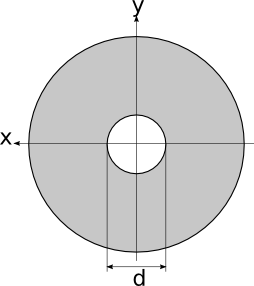
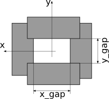

NXaperture and Slits¶
The actual NXaperture base class is far too complex for most of the apertures used at synchrotron facilities. Currently, the most commonly used aperture types are:
Pinholes
2 or 4 blade slits.
From the current implementation of NXaperture, it would be rather difficult to obtain relevant quantities like the size of the slit gap or the offsets of the gap. There are basically two ways how to face this problem:
Redesign NXaperture
Or introduce new classes for more specific aperture types.
Which of them is appropriate for us should be the topic of this discussion.
Introducing new classes¶
Pinholes - NXpinhole¶
{kind=link}

Pinholes are most probably the simplest apertures available. The only parameter of importance is the diameter of the pinhole and its position with respect to the beam (as shown in the image). From this sketch, one could easily deduce a new class NXpinhole with the following parameters:
NXpinhole
diameter: NX_LENGTH
depends_on: NX_CHAR
The first parameter, diameter, describes the diameter of the pinhole, while depends_on references the last element of the chain of transformations to position the center of the pinhole.
Slits - NXslit¶
{kind=link}

Two or four blade slits are the most common apertures used at synchrotrons. In this example, a 4-blade slit is shown. The most important parameter for such a system is the size of the aperture determined by the positions of the blades. A base class NXslit could look like this:
NXslit
x_gap: NX_LENGTH
y_gap: NX_LENGTH
depends_on: NX_CHAR
The gaps are given in the local reference frame of the slit system, which is defined by the transformation chain referenced by the depends_on field. The depends_on places the center of the slit assembly into the coordinate system. NXslit basically describes a rectangular aperture. The positions of the individual slit blades are not included in the definition of the base class.
What happens to NXaperture¶
The original NXaperture remains unchanged (for the sake of compatibility) and can still be used for all kinds of more complex apertures which cannot be represented by the new classes.